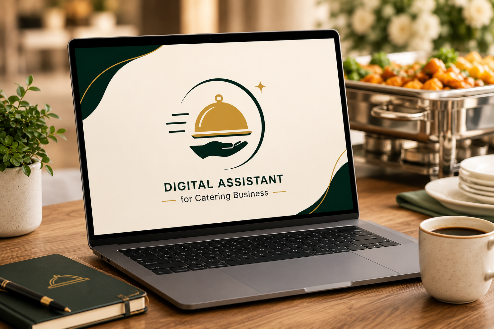

Catering
Mar 8, 2025 · 5 min read
What catering businesses should look for in a digital assistant
Not every business needs a full-time employee. Here is how to find the right person to handle your digital tasks.
Jihad
Web Developer & Catering Business Support

Why digital support matters for catering businesses
Catering businesses are moving fast — events, deliveries, menus, invoices, staff coordination. The one thing every owner I've worked with tells me is: the admin is the bottleneck.
From editing monthly invoices to formatting PDF delivery notes, removing logos from images, and managing tax spreadsheets — these tasks pile up fast.
What a good digital assistant actually does
- Invoice editing. Monthly invoices need formatting, corrections, and client-specific customisation.
- PDF and document work. Delivery notes, order confirmations, tax sheets, menu PDFs.
- Image editing. Removing logos, resizing photos for menus and social media.
- Website updates. Menu changes, pricing, adding new pages.
- Admin panel management. Keeping booking systems and order dashboards in order.
What to look for when hiring digital support
- Reliability over speed. Consistent delivery is worth more than fast but inconsistent work.
- Attention to detail. A single error can cause confusion with a client.
- Industry understanding. Someone who works with catering needs less hand-holding.
- Communication. They tell you when it's done and ask when unclear.
If this was helpful, reach out via the contact form. 🍽️